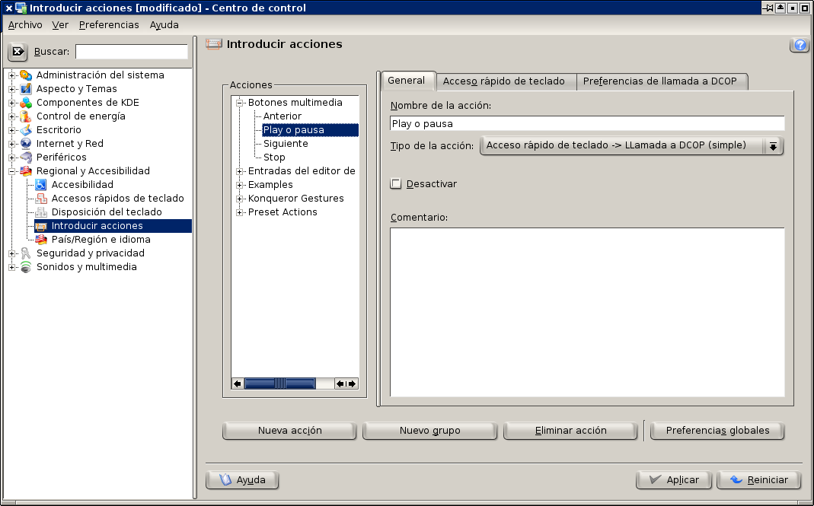
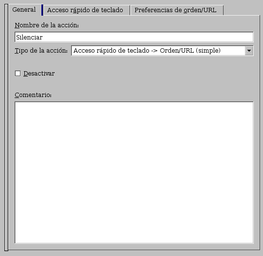

Cómo configurar los botones multimedia en KDE
Este manual está actualizado. Para la computadora portátil Dell Inspiron 9300 con Debian Lenny, KDE como entorno de escritorio y Amarok como reproductor de audio.
Gran parte de las computadoras de escritorio y portátiles modernos tienen botones multimedia, si este equipo viene con Windows instalado de fábrica, estos botones ya estarán configurados. Quienes usamos GNU/Linux nos vemos en la necesidad de hacer esta configuración de forma manual.

Configuración de las X's
El primer paso es revisar que tengamos bien configuradas las X's. Muestro a continuación el segmento del archivo de configuración /etc/X11/xorg.conf para un teclado en español y latinoamericano. Para modificar el archivo xorg.conf se necesita ser root.
Section "InputDevice"
Identifier "Generic Keyboard"
Driver "kbd"
Option "CoreKeyboard"
Option "XkbRules" "xorg"
Option "XkbModel" "pc105"
Option "XkbLayout" "latam"
EndSection
Las X's correctamente configuradas deberán entregar un código cuando sea presionado un botón multimedia.
Descubriendo los scancodes
Vamos a ejecutar el programa xev, que es una utilería de las X's. Inicie su sesión como un usuario normal en KDE, abra una terminal y ejecute el comando:
$ xev
Este programa muestra una pequeña ventana blanca y en la terminal se pueden ver los textos de salida. Mientras corra, estará atento a cualquier tecla o movimiento del ratón, mandando información del evento a la terminal.
Coloque el puntero sobre la ventana blanca del xev, vaya presionando uno por uno los botones multimedia y tomando nota de los keycodes.

Como ejemplo, cuando presiono el botón de Play/Pausa me aparece dos bloques de datos, de cuando presiono el botón y cuando lo libero:
KeyPress event, serial 31, synthetic NO, window 0x2400001,
root 0x44, subw 0x0, time 4421581, (88,247), root:(351,455),
state 0x0, keycode 162 (keysym 0x0, NoSymbol), same_screen YES,
XLookupString gives 0 bytes:
XmbLookupString gives 0 bytes:
XFilterEvent returns: False
KeyRelease event, serial 31, synthetic NO, window 0x2400001,
root 0x44, subw 0x0, time 4421760, (88,247), root:(351,455),
state 0x0, keycode 162 (keysym 0x0, NoSymbol), same_screen YES,
XLookupString gives 0 bytes:
XFilterEvent returns: False
Observe el tercer renglón de cada bloque, el botón de Play/Pausa tiene el keycode 162, pero no hay un caracter asociado al mismo por que muestra NoSymbol.
Cuando el botón nos da su keycode pero no tiene un caracter asociado, debemos configurar el keycode al caracter que creamos conveniente. Esto es justo lo que haremos en la siguiente sección.
Estableciendo los caracteres para los keycode no definidos.
Vamos a crear un archivo de configuración en su directorio home con el nombre .xmodmaprc (nombre recomendado por el manual del xmodmap) con las claves y su equivalencia para las X's. He aquí la muestra:
keycode 160 = XF86AudioMute
keycode 174 = XF86AudioLowerVolume
keycode 176 = XF86AudioRaiseVolume
keycode 162 = XF86AudioPlay
keycode 144 = XF86AudioPrev
keycode 153 = XF86AudioNext
keycode 164 = XF86AudioStop
Procedemos a probar si esta configuración es correcta. Para cargar esta configuración y revisarla con xev ejecute en una terminal:
$ xmodmap ~/.xmodmaprc
$ xev
Al presionar de nuevo el botón de Play/Pausa vemos que el caracter está correctamente asignado:
KeyPress event, serial 31, synthetic NO, window 0x2400001,
root 0x44, subw 0x0, time 5096736, (131,124), root:(666,262),
state 0x0, keycode 162 (keysym 0x1008ff14, XF86AudioPlay), same_screen YES,
XLookupString gives 0 bytes:
XmbLookupString gives 0 bytes:
XFilterEvent returns: False
KeyRelease event, serial 31, synthetic NO, window 0x2400001,
root 0x44, subw 0x0, time 5096946, (131,124), root:(666,262),
state 0x0, keycode 162 (keysym 0x1008ff14, XF86AudioPlay), same_screen YES,
XLookupString gives 0 bytes:
XFilterEvent returns: False
Haciendo que la configuración se cargue al iniciar la sesión.
En este punto tenemos las asiganciones keycode a caracter, pero debemos cargarlas manualmente cada vez que encendemos el equipo.
Para no ser invasivos al sistema operativo, vamos a crear un Bash script que ejecute el comando xmodmap y cargue la configuración cada vez que iniciamos la sesión de usuario. KDE tiene un directorio Autostart para cada usuario.
Para crear este Bash script abra una terminal y escriba:
$ cd ~/.kde/Autostart/
$ nano -w botones-multimedia.sh
El script botones-multimedia.sh simplemente va ejecutar el programa xmodmap con un parámetro, el archivo de configuración que hemos creado:
1 2 | #!/bin/bash
xmodmap ~/.xmodmaprc
|
Guarde los cambios y salga del editor. Haga este script ejecutable con el comando chmod:
$ chmod a+x botones-multimedia.sh
$ exit
Cierre su sesión del KDE y vuelva a entrar. Abra una nueva terminal y ejecute xev de nuevo para presionar cada botón multimedia y revisar que todos ellos tengan su caracter correcto.
Descubriendo los comandos DCOP para Amarok
La Dell Inspiron 9300 tiene los botones Play/Pausa, Anterior (previous), Siguiente (next) y Stop (detener). Los cuales vamos a configurar para que controlen al Amarok.
Necesitamos conocer los comandos DCOP que nos permitan controlar la reproducción de audio en Amarok. Para ello, abra una terminal y ejecute el siguiente comando:
$ dcop amarok player
Nos entregará una larga lista de operadores. Tome nota de los que quiera controlar con los botones multimedia. En mi equipo he elegido los siguientes:
void next()
void playPause()
void prev()
void stop()
Ejecute Amarok y pruebe cada comando DCOP (observe que van sin paréntesis):
$ dcop amarok player next
$ dcop amarok player playPause
$ dcop amarok player prev
$ dcop amarok player stop
Tome nota de los comandos DCOP para Amarok que quiera configurar para sus botones multimedia.
Descubriendo los comandos DCOP para kMix
Ahora viene una situación muy particular de mi computadora portátil Dell Inspiron 9300: necesito ajustar dos controles de volumen, por que un volumen es el de las bocinas delanteras y el otro de las traseras y bajos.


Primero descubro los operadores DCOP de la aplicación Kmix ejecutando el siguiente comando:
$ dcop kmix Mixer0
De entre todos elijo los tres siguientes. Como verán, son los que me incrementarán, decrementarán y silenciarán los volúmenes.
void increaseVolume(int deviceidx)
void decreaseVolume(int deviceidx)
void toggleMute(int deviceidx)
Cada uno necesita como parámetro un número entero que se refiere al control a alterar. En mi caso, las bocinas principales son 0 y las de los bajos son 1.
Entonces, para incrementar el volumen ejecuto:
$ dcop kmix Mixer0 increaseVolume 0; dcop kmix Mixer0 increaseVolume 1
Para decrementar el volumen:
$ dcop kmix Mixer0 decreaseVolume 0; dcop kmix Mixer0 decreaseVolume 1
Y para silenciar/des-silenciar:
$ dcop kmix Mixer0 toggleMute 0; dcop kmix Mixer0 toggleMute 1
Creando las acciones para Amarok.
Ejecute Centro de control, vaya al apartado Regional y Accesibilidad, luego a Introducir acciones.
Con el fin de mantener organizadas las nuevas acciones, le recomiendo que cree un nuevo grupo. Presione el botón Nuevo grupo y como nombre del mismo escriba Botones multimedia.

Para agregar una nueva acción presione Nueva acción, luego escriba el nombre que prefiera. Establezca que el tipo de acción es Acceso rápido de teclado -> LLamada a DCOP (simple).

Vaya al apartado Acceso rápido de teclado, de clic en el botón para definir la tecla y presione el botón multimedia que corresponda a la acción que esté creando.

Vaya al apartado Preferencias de llamada a DCOP y llene los campos correspondientes para comunicarse con la aplicación amarok.

Repita este proceso por cada botón multimedia que requiera su acción.
Creando las acciones para Kmix.
En el mismo grupo vamos a agregar las tres acciones para incrementar, decrementar y silenciar los volúmenes.
Presione Nueva acción. Como la órden ejecuta dos comandos, vamos a definir Tipo de la acción como Acceso rápido de teclado -> Orden/URL (simple):

Vaya al apartado Acceso rápido de teclado, de clic en el botón para definir la tecla y presione el botón multimedia que corresponda a la acción que esté creando.
Y en Preferencias de orden/URL, escriba los dos comandos, separados por ";"

Pruebe sus botones multimedia.
Notará que toda esta configuración es a nivel del usuario, por lo que si hay varias cuentas definidas en un equipo, será necesario copiar los archivos .xmodmap botones-multimedia.sh a cada directorio home y también declarar las acciones.
Vale la pena dedicarle algunos minutos a relizar este procedimiento. A la larga se ahorrará muchos movimientos y clicks de ratón usando en su lugar los botones multimedia. ¡Disfrute de la comodidad de controlar su música!